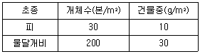

식물보호산업기사 (2010-09-05 기출문제)
1과목: 식물병리학
1. 벼 흰잎마름병의 가장 중요한 발병 요인은?
- 저온
- 건조
- 태풍에 의한 침수
- 질소 비료의 과용
(정답률: 88%)

2. 잣나무 잎떨림병균의 월동 장소는?
- 땅위에 떨어진 병든 잎
- 토양 속
- 병든 가지
- 나뭇가지에 붙어 있는 병든 잎
(정답률: 55%)
3. 외부로부터 유해한 작용을 받았을 때 신속하게 치유하는 특성을 무엇이라 하는가?
- 감수성(sensibility)
- 저항성(resistance)
- 보상성(compensation)
- 친화성(sffinity)
(정답률: 59%)
4. 병원체가 침입할 수 있는 식물체의 자연개구가 아닌 것은?
- 기공
- 수공
- 피목
- 각피
(정답률: 86%)
5. 파이토플라스마병 진단법과 거리가 먼 것은?
- 다인스 염색(Dienes stain)
- 다피 염색(DAPI)
- 항열청법
- 카보란덤(Carborundum)
(정답률: 61%)
6. 식물병과 중간기주를 바르게 연결한 것은?
- 소나무 혹병 – 졸참나무
- 배나무 붉은별무늬병 – 까치밥나무
- 맥류 줄기녹병 – 향나무
- 포플러 잎녹병 – 보리
(정답률: 81%)
7. 식물병을 일으키는 바이러스에 대한 설명으로 틀린 것은?
- 핵산과 외피단백질로 구성되어 있다.
- 생체 내에서만 증식한다.
- 곤충 및 즙액접종에 의하여 전염된다.
- 인공배지에서 배양이 잘된다.
(정답률: 89%)
8. 병해방제 비용이 작물수익의 증가분과 정확하게 일치할 때의 발병 수준을 무엇이라 하는가?
- 경제적 한계선
- 피해한계선
- 경제적 손실수준
- 수량 손실수준
(정답률: 74%)
9. 고구마 검은무늬병 방제 방법으로 저장 직전에 실시하는 것은?
- 박피
- 건조
- 냉수온탕침법
- 큐어링(curing)
(정답률: 88%)
10. 파종기를 늦춰어 이병성 품종의 병발생을 막았다면 이것은 무엇을 이용한 방제 방법인가?
- 저항상
- 회피
- 면역성
- 내성
(정답률: 94%)
11. 특정한 병원균의 레이스에만 저항성을 나타내며 환경요인에 대해 안정적인 저항성은?
- 수평저항상
- 비특이적저항성
- 포장저항성
- 수직저항성
(정답률: 80%)
12. 포플러 모자이크병 진단을 위한 지표식물로 가장 알맞은 것은?
- 명아주
- 동부
- 상추
- 콩
(정답률: 62%)
13. 사과 수심(water core) 현상의 원인은?
- 광선의 피해
- 고온의 피해
- 저온의 피해
- 서리의 피해
(정답률: 76%)
14. 병지의 은폐(masking)가 일어나는 병은?
- 식물 진균병
- 식물 세균병
- 식물 바이러스병
- 식물 파이토플라스마병
(정답률: 70%)
15. 식물병의 방제법에 대한 설명으로 틀린 것은?
- 대추나무 빗자루병은 옥시테트라싸이클린 항생제로 수간주입하여 치료한다.
- 뽕나무 오갈병의 방제를 위해 매미충류 구제(驅除)가 필요하다.
- 과수 뿌리혹병을 방제하기 위해서는 묘묙에 상처가 나지 않게 해야 한다.
- 양배추 검은빛썩음병은 무병주에서의 채종은 필요하지 않다.
(정답률: 95%)
16. 우리나라에서 배나무 붉은별무늬병에 대하여 언급한 최초의 저서는?
- 임원경제지
- 농가집성
- 행포지
- 행포지농가월령가
(정답률: 70%)
17. 병든 식물을 습실처리하여 병의 원인을 가장 쉽게 진단할 수 있는 것은?
- 곰팡이에 의한 병
- 생리장애에 의한 병
- 바이러스에 의한 병
- 파이토플라스마에 의한 병
(정답률: 93%)
18. 병원균의 포자가 공기 중에 확산되어 주로 바람에 의해 전파되는 병은?
- 벼 잎집무늬마름병
- 벼 오갈병
- 벼 키다리병
- 벼 도열병
(정답률: 71%)
19. 종자전염성 병원균이 아닌 것은?
- 맥류 맥각병균
- 벼 도열병균
- 벼 키다리병균
- 오이 흰비단병균
(정답률: 67%)
20. 담배 모자이크바이러스(TMV)와 같은 바이러스에 의해 감염된 식물체의 세포 내에는 건전식물의 세포에는 볼 수 없는 특이한 구조를 볼 수 있는데 이것을 무엇이라 하는가?
- 골지체
- protein
- 봉입체
- 액포
(정답률: 79%)
2과목: 농림해충학
21. 가로수에 밴딩(banding)을 하여 해충을 방제하는 기술은 주로 어떤 해충을 대상으로 한 것인가?
- 도둑나방
- 미국흰불나방
- 잎말이나방
- 심식나방
(정답률: 79%)
22. 곤충의 파악기(把握器)를 옳게 설명한 것은?
- 파리목의 뒷날개가 변형된 것
- 암컷의 생식기 부속기관
- 숫컷이 교미시 암컷을 붙잡는 부속기구
- 일벌 암컷의 산란관이 독침으로 변황된 것
(정답률: 83%)
23. 오리나무잎벌레의 천적으로 가장 보호되어야 할 곤충은?
- 벼룩좀벌
- 침노린재
- 무당벌레
- 실잠자리
(정답률: 70%)
24. 곤충의 24시간주기(circadian rhythms)와 가장 관계가 깊은 환경 요인은?
- 습도
- 온도
- 광주기
- 풍속
(정답률: 70%)
25. 수목에 비료를 시비할 때 진딧물류, 깍지벌레류와 같은 흡즙성 해충의 증식을 가장 촉진시키는 비료의 종류는?
- 질소질 비료
- 인산질 비료
- 칼륨질 비료
- 칼슘질 비료
(정답률: 89%)
26. 불완전 변태를 하는 곤충 목(目)은?
- 노린재목
- 딱정벌레목
- 파리목
- 나비목
(정답률: 84%)
27. 기주이동을 하는 곤충은?
- 복숭아혹진딧물
- 배추좀나방
- 파밤나방
- 털두꺼비하늘소
(정답률: 76%)
28. 벼룩잎벌레에 대한 설명으로 틀린 것은?
- 유충이 잎을 가해한다.
- 잡초나 얕은 땅속에서 월동한다.
- 성충으로 월동한다.
- 1년에 4~5회 발생한다.
(정답률: 41%)
29. 곤충이 분비하는 방어물질은 곤충 이종간(異種間)의 통신용 화합물이다. 잠재적 포식자와 마주쳤을 때에 자신을 보호하기 위하여 분비하는 물질은?
- 알로몬(allomone)
- 봄비콜(bombykol)
- 페로몬(pheromone)
- 알라타(allata)체 호르몬
(정답률: 72%)
30. 곤충의 순환계에 대한 설명으로 틀린 것은?
- 곤충의 등쪽에 대동맥이 있다.
- 혈액은 혈장과 혈구세포로 이루어진다.
- 심장에는 심문이 있다.
- 곤충은 폐쇄형 순환계를 가지고 있다.
(정답률: 87%)
31. 곤충 체내조직에 산소를 운반하는 곳은?
- 개방 혈관계
- 폐쇄 혈관계
- 혈구
- 기관계
(정답률: 68%)
32. 단식성인 해충은?
- 배추좀나방
- 파밤나방
- 노랑쐐기나방
- 미국흰불나방
(정답률: 75%)
33. 밤나무혹벌에 대한 설명으로 틀린 것은?
- 유충으로 월동한다.
- 천적으로는 중국긴꼬리좀벌과 노랑왕꼬리좀벌이 있다.
- 하나의 벌레혹(충영)에는 한 마리의 유충이 있다.
- 내충성 품종이 방제에 이용된다.
(정답률: 73%)
34. 분류학상 곤충강(綱)에 속하지 않는 것은?
- 가루깍지벌레
- 목화진딧물
- 점박이응애
- 독나방
(정답률: 91%)
35. 다음 중 내한성(耐寒性)이 가장 약한 해충은?
- 애멸구
- 벼멸구
- 끝동매미충
- 번개매미충
(정답률: 76%)
36. 곤충의 소화기관 중 발생학적으로 외배엽성 기원이 아닌 부위는?
- 기관계
- 전장
- 중장
- 후장
(정답률: 53%)
37. 곤충의 혈림프로 방출되는 탄수화물의 저장 형태는?
- 글리코겐
- 무코다당류
- 트레하로스
- 키틴
(정답률: 57%)
38. 천공성 해충이 아닌 것은?
- 소나무좀
- 어스렝이나방
- 왕소나무좀
- 박쥐나방
(정답률: 63%)
39. 끝동매미충의 월동충태는?
- 알
- 2령 약충
- 4령 약충
- 성충
(정답률: 58%)
40. 목재섬유인 셀룰로오스를 분해할 수 있는 공생미생물은 흰개미의 몸 어느 부위에서 존재하는가?
- 입
- 전장
- 위
- 직장
(정답률: 58%)
3과목: 농약학
41. 다음 중 카바메이트를 주성분으로 하는 약제는?
- 페노브카브(BPMC)유제
- 트라아조포스유제
- 펜토에이트유제
- 아이소프로티올레인
(정답률: 72%)
42. nereistoxin을 기초로 한 천연물 유도형의 살충제는?
- 칼탑입제
- 펜프로유제
- 벤즈수화제
- 파라핀오일제
(정답률: 65%)
43. 수화제, 수용제 등의 살포액에 기포제를 가하여 전용노즐로 공기와 교반하여 가는 거품의 집합체로 살포하는 방법은?
- 분무법
- 미스트법
- 스프링클러법
- 폼스프레이법
(정답률: 89%)
44. 응애약인 플로페녹수론 분산성액제의 검사항목을 옳게 나타낸 것은?
- 유효성분, 유화성
- 유효성분, 수중분산성
- 유효성분, 분말도
- 유효성분, 수용성
(정답률: 60%)
45. 항생제인 가스가마이신 액제의 주된 살균 기작은?
- 멜라닌색소 합성 저해
- 단백질 합성 저해
- 콜린에스터라제(cholinesterase)효소 활성 저해
- 항균력 증가
(정답률: 70%)
46. 비중 1.15인 비피단유제(50%) 100mL로 0.⑤% 살포액을 조제하는데 필요한 물의 양은 몇 L 인가?
- 74.9
- 94.9
- 114.9
- 134.9
(정답률: 66%)
47. 식품 중에 잔류되는 유기인계 농약성분을 분석하는데 주로 사용되는 방법은?
- 중량법
- 적정법
- 칼로리메타법
- 가스크로마토그래피법
(정답률: 75%)
48. 유기인계 살충제의 일반적인 성질에 대한 설명으로 옳은 것은?
- 동물의 체내에서 분해가 느리다.
- 알칼리에는 용이하게 분해된다.
- 광선에 의한 분해가 일어나지 않는다.
- 인축에 대한 독성이 약하다.
(정답률: 78%)
49. 살포된 분제가 식물체 표면에 잘 달라붙게 하는 성질을 무엇이라 하는가?
- 안정성
- 분산성
- 비산성
- 부착성
(정답률: 89%)
50. 제초제, 목재의 방부제, 낙엽촉진제 등으로 광범위하게 사용되는 약제는?
- 카르복신제
- PCP제
- EBP제
- 트리아진제
(정답률: 69%)
51. 우리나라 농약의 어독성은 어떻게 구분하여 관리하고 있는가?
- Ⅰ급, Ⅱ급
- Ⅰ급, Ⅱ급, Ⅲ급
- Ⅰ급, Ⅱ급, Ⅲ급, Ⅳ급
- 무독성, Ⅰ급, Ⅱ급, Ⅲ급
(정답률: 66%)
52. 토양내에서 서식하고 있는 병해충을 방제하기 위한 가장 적당한 농약 사용 방법은?
- 침지법
- 살포법
- 훈증법
- 도포법
(정답률: 72%)
53. 농약의 사용방법과 관련하여 일어나는 약해가 아닌 것은?
- 불순물 혼합에 의한 약해
- 섞어쓰기 때문에 일어나는 약해
- 동시사용으로 인한 약해
- 근접살포에 의한 약해
(정답률: 74%)
54. 다음 중 Sulfonyl urea계 제초제는?
- 엠시피에이(MCPA)
- 피라조설퓨론에틸(pyrazosulfuron ethyl)
- 티오벤카브(thiobencarb)
- 메톨라클로르(metolachlor)
(정답률: 62%)
55. 우리나라에서 농약 등록 시 안전성 평가항목으로서 일반 독성 평가 항목에 해당되지 않는 것은?
- 조류 독성
- 만성 독성
- 변이원성
- 번식 독성
(정답률: 49%)
56. 농약의 독성을 표시할 때 사용하는 LD50의 의미는?
- 완전치사량
- 30% 이상 살아남은 양
- 60% 치사량
- 중위치사량
(정답률: 84%)
57. 농약의 독성정도에 따른 구분 시 급성경구(고체의 경우)의 고독성이라고 하면 반수치사량(mg/kg체중)이 얼마로 정해져 있는가?
- 20미만
- 5이상 50미만
- 10이상 100미만
- 20이상 200미만
(정답률: 75%)
58. 급성독성 중 일반적으로 호흡기를 통해서 흡수되는 독성을 무엇이라 하는가?
- 경구독성
- 경피독성
- 만성독성
- 흡입독성
(정답률: 84%)
59. 다음 중 입체 제제 시 증량제로 사용되지 않는 것은?
- 벤토나이트
- 탈크
- 카올린
- 라그닌술폰산염
(정답률: 71%)
60. Dichlorvos(DDVP)에 대한 설명으로 옳지 않은 것은?
- 훈증제나 훈연제로서의 제형 개발이 가능하다.
- 인축에 대한 독성이 비교적 강하다.
- 잔효성이 길어 수확 직전의 농작물에는 맞지 않다.
- 유기인계 살충제이다.
(정답률: 57%)
4과목: 잡초방제학
61. 콩밭에 중경·배토하는 것은 어떠한 효과가 있는가?
- 잡초방제와는 상관이 없다.
- 잡초방제에 매우 유익하다.
- 잡초방제에 유익하지 못하다.
- 토양미생물 작용에만 도움이 된다.
(정답률: 84%)
62. 일반적으로 잡초에 의한 피해를 줄이기 위하여 철저히 방제를 하여야 할 작물의 생육 시기는?
- 생육초기
- 생육중기
- 생육후기
- 생육 중기부터 후기 사이
(정답률: 80%)
63. 제초제에 대한 설명으로 틀린 것은?
- 2,4-D는 화본과 잡초에 효과적이다.
- 알라클로르(alachlor)유제는 일년생 잡초에 효과적이다.
- 리뉴론(linuron) 수화제는 일년생 화본과 잡초에 효과적이다.
- 시마진(simazine)은 바랭이, 쇠비름에 효과적이다.
(정답률: 51%)
64. 잡초의 이용면을 잘못 연결한 것은?
- 피 – 가축 사료
- 어저귀 – 가축 사료
- 도꼬마리 – 민간 약재
- 부레옥잠 – 수질 정화
(정답률: 72%)
65. 제초제에 따른 약효 반응과 가장 관련이 적은 증상은?
- 괴사(necrosis)
- 상편생장
- 황화
- 숙기억제
(정답률: 55%)
66. 논 잡초의 군집의 초종별 건물중이 다음과 같을 때 피에 대한 중요값(impotance value)은?

- 15
- 20
- 25
- 30
(정답률: 48%)
67. 화학적 잡초방제법의 단점은?
- 제초효과가 낮다.
- 일정한 지역에 처리가 불가능하다.
- 노력과 비용이 많이 든다.
- 환경에 대한 안전성이 낮다.
(정답률: 79%)
68. 논 제초제 사용방법으로 틀린 것은?
- 지나친 고온이나 저온에서는 약해의 우려가 커지므로 제초제 살포를 피한다.
- 입제농약을 뿌릴 때는 논물을 약 3~4cm 담수하고 뿌리며 약 4~5일간 담수를 유지한다.
- 경엽처리제는 논물을 낙수하고 뿌려야 제초효과가 빨리 나타난다.
- 모래논이나 물빠짐이 심한 논은 제초제 사용량을 표준사용량 보다 약간 증가한다.
(정답률: 70%)
69. 잡초종자가 발아하는데 관여하는 3대 환경요소가 아닌 것은?
- 광
- 온도
- 산소
- 토양
(정답률: 58%)
70. 잡초의 번식에 대한 설명으로 옳은 것은?
- 종자에 의한 번식을 하는 잡초에는 돌피, 별꽃, 알방동사니가 있다.
- 경운과 같은 농경지의 교란이 증가하면 영양번식체에 의한 번식이 증가한다.
- 영양번식체에 의한 번식을 하는 잡초종은 대부분 종자에 의한 번식은 하지 않는다.
- 잡초의 휴면은 종자에서만 일어나므로 올방개나 벗풀의 괴경에는 휴면이 없다.
(정답률: 58%)
71. 잡초의 형태적 특성에 따른 분류로 옳은 것은?
- 화본과 잡초, 광엽잡초, 사초과잡초
- 1년생잡초, 2년생잡초, 다년생잡초
- 수생잡초, 습생잡초, 건생잡초
- 지상식물, 반지중식물, 지중식물
(정답률: 83%)
72. 논의 잡초 발생과 방제에 대한 설명으로 옳은 것은?
- 육묘상자를 이용한 상자 육묘의 경우 물못자리보다 잡초 발생이 많다.
- 직파재배를 할 경우 이앙재배를 할 경우보다 발생하는 잡초의 종류가 다양해진다.
- 건답직파를 할 겨우 담수 직파에 비해 잡초 발생이 적다.
- 성묘 손이앙을 할 경우 어린모 기계이앙을 할 경우보다 잡초 발생이 많다.
(정답률: 79%)
73. 잡초 종자가 새로운 지역으로 확산되기 위한 전파 기능 중 종실에 가시나 갈고리 모양의 돌기가 있어 인축에 부착되어 전파되는 초종으로만 나열된 것은?
- 민들레, 쇠비름
- 까마중, 가는털비름
- 소리쟁이, 좀명아주
- 도깨비바늘, 도꼬마리
(정답률: 92%)
74. 잡초와 작물과의 경합 요인 중 가장 영향력이 높은 것은?
- 광
- 양분
- 수분
- CO2
(정답률: 68%)
75. 논에서 발생하는 우점 다년생 잡초와 가장 거리가 먼 것은?
- 가래
- 올미
- 메꽃
- 너도방동사니
(정답률: 76%)
76. 벼 재배시 벼와 경합이 가장 큰 잡초는?
- 강피
- 물달개비
- 올방개
- 벗풀
(정답률: 86%)
77. 혼합제초제의 효과로 볼 수 없는 것은?
- 살초폭을 넓힌다.
- 길항적 효과가 있다.
- 상승적 효과가 있다.
- 상가적 효과가 있다.
(정답률: 78%)
78. 여름작물(콩, 옥수수, 감자, 참깨) 포장에서 발생이 가장 많은 우점 잡초는?
- 바랭이
- 뚝새풀
- 별꽃
- 냉이
(정답률: 71%)
79. C3 작물과 C4 잡초의 연결로 틀린 것은?
- 벼 – 강피
- 콩 – 털비름
- 감자 – 엉겅퀴
- 보리 – 쇠비름
(정답률: 54%)
80. 국내 논에서 발생하고 있는 제초제 저항성 잡초들은 주로 어떤 계통에 대한 저항성 잡초들인가?
- 설포닐우레아계
- 유기인계
- 카바메이트계
- 디페닐에테르계
(정답률: 61%)